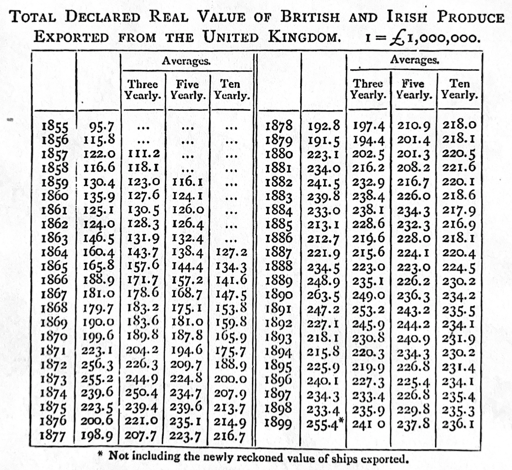

Read one of the following articles from The New Yorker:
Funny Like a Guy, Tad Friend, 4 April 2011
Going the Distance, David Remnick, 19 January 2014
How the First Gravitational Waves Were Found, Nicola Twilley, 11 February 2016
Happy Feet, Alexandra Jacobs, 7 September 2009
Levels of the Game, John McPhee, 31 May 1969
Reporting from Hiroshima, John Hersey, 23 August 1946
The Catastrophist, Elizabeth Kolbert, 22 June 2009
The Quiet German, George Packer, 24 November 2014
The Pursuit of Beauty, Alec Wilkinson, 1 February 2015
Read one of the following articles from miscellaneous publications:
Blades of Glory, Holly Anderson, Grantland
Born to Run, Walt Harrington, Washington Post
Dropped, Jason Fagone, Grantland
Federer as Religious Experience, David Foster Wallace, New York Times Magazine
Generation Why?, Zadie Smith, New York Review
One hundred years of arm bars, David Samuels, Grantland
Out in the Great Alone, Brian Phillips, ESPN
Pearls Before Breakfast, Gene Weingarten, The Washington Post
Resurrecting The Champ, J.R. Moehringer, Los Angeles Times
The Cult of “Jurassic Park”, Bryan Curtis, Grantland
The House that Hova Built, Zadie Smith, The New York Times
The Re-Education of Chris Copeland, Flinder Boyd, SB Nation
The Sea of Crisis, Brian Phillips, Grantland
The Webb Space Telescope Will Rewrite Cosmic History. If It Works., Natalie Wolchover, Quanta Magazine
Key concepts and skills
Writing is a key skill, perhaps the most important skill, of all the skills required of a data scientist. The only way to get better at writing is to write, ideally every day.
When we write, although the benefits typically accrue to ourselves, we must nonetheless write for the reader. This means having one key message that we want to communicate, and thinking about where they are, rather than where we are.
The key is that we get to a first draft as quickly as possible. Even if it is horrible, the difference between a first draft existing and not is enormous. At that point we start to rewrite. When doing so we aim to maximize clarity, often by removing unnecessary words.
We typically begin with some area of interest and then develop research questions and data in an iterative way. Even as we are writing our research, we are coming to a better understanding of what we are doing.
4.1 Introduction
If you want to be a writer, you must do two things above all others: read a lot and write a lot. There’s no way around these two things that I’m aware of, no shortcut.
We predominately tell stories with data by writing them down. Writing allows us to communicate efficiently. It is also a way to work out what we believe and allows us to get feedback on our ideas. Effective papers are tightly written and well-organized, which makes their story easy to follow and flow well. Proper sentence structure, spelling, vocabulary, and grammar are important because they remove distractions and enable each aspect of the story to be clearly articulated. Effective papers demonstrate understanding of their topic by appropriately using relevant terms and techniques, and considering issues carefully without being verbose. Both the quality of your story and its credibility can be enhanced by graphs, tables, and references.
This chapter is about writing. By the end of it, you will have a better idea of how to write short, detailed, quantitative papers that communicate what you want them to, and do not waste the reader’s time. We write for the reader, not for ourselves. Specifically, we write to be useful to the reader. This means clearly communicating something new, true, and important (Graham 2020). That said, the greatest benefit of writing nonetheless often accrues to the writer, even when we write for our audience. This is because the process of writing is a way to work out what we think and how we came to believe it.
Finally, aspects of this chapter can feel a little like a list. It may be that, in a similar way to Appendix A, you go through those aspects quickly initially, and then return to them as needed, having continued through the rest of the book.
4.2 Re-writing
The way to do a piece of writing is three or four times over, never once. For me, the hardest part comes first, getting something—anything—out in front of me. Sometimes in a nervous frenzy I just fling words as if I were flinging mud at a wall. Blurt out, heave out, babble out something—anything—as a first draft. With that, you have a achieved a sort of nucleus. Then, as you work it over and alter it, you begin to shape sentences that score higher with the ear and the eye. Edit it again—top to bottom. The chances are that about now you’ll be seeing something that you are sort of eager for others to see. And all that takes times. What I have left out is the interstitial time. You finish that first awful blurting, and then you put the thing aside. You get in your car and drive home. On the way, your mind is still knitting at the words. You think of a better way to say something, a good phrase to correct a certain problem. Without that drafted version—if it did not exist—you obviously would not be thinking of things that would improve it. In short, you may be actually writing only two or three hours a day, but your mind, in one way or another, is working on it twenty-four hours a day—yes, while you sleep—but only if some sort of draft of earlier version already exists. Until it exists, writing has not really begun.
The process of writing is a process of re-writing. And the critical task is to get to a first draft as quickly as possible. Until that complete first draft exists, it is useful to try to not to delete, or even revise, anything that was written, regardless of how bad it may seem. Just write.1
One of the most intimidating things in the world is a blank page, and we deal with this by immediately adding headings such as: “Introduction”, “Data”, “Model”, “Results”, and “Discussion”. And then adding fields in the top matter for the various bits and pieces that are needed, such as “title”, “date”, “author”, and “abstract”. This creates a generic outline, which will play the role of mise en place for the paper. By way of background, mise en place is a critical preparatory phase of cooking in a professional kitchen, when the ingredients that will be needed during service are sorted, prepared, and arranged for easy access, ensuring everything that is needed is available without unnecessary delay. Putting together an outline plays the same role when writing quantitative papers, and is akin to placing on the counter, the ingredients that we will use to prepare dinner (McPhee 2017).
Having established this generic outline, we need to develop an understanding of what we are exploring through thinking deeply about our answer to our research question. In theory, we develop a research question, answer it, and then we do all the writing; but that rarely actually happens (Franklin 2005). Instead, we typically have some idea of the question, and our answer, and these become less vague as we write. This is because it is through the process of writing that we refine our thinking (S. King 2000, 131). Having put down some thoughts about the research question, we can start to add dot points in each of the sections, adding sub-sections with informative sub-headings as needed. We then go back and expand those dot points into paragraphs. We do all this as part of a web of other researchers and other influences, including our environment, and this all serves to influence our thinking (Latour 1996).
While writing the first draft it is important to ignore the feeling that one is not good enough, or that it is impossible. Just write. We need words on paper, even if they are bad, and the first draft is when we accomplish this. Remove all distractions and focus on writing, even if it needs to be forced. Perfectionism is the enemy, and should be set aside. Sometimes this can be accomplished by getting up very early to write, by creating a deadline, forming a writing group, or with a glass or two of wine. Creating a sense of urgency can be useful and one option is rather than adding proper citations as we go, which could slow us down, just add something like “[TODO: CITE R HERE]”. Do similar with graphs and tables. That is, include textual descriptions such as “[TODO: ADD GRAPH THAT SHOWS EACH COUNTRY OVER TIME HERE]” instead of actual graphs and tables. Focus on adding content, even if it is bad. When this is all done, a first draft exists.
This first draft will be poorly written and far from great. But it is by writing a bad first draft that we can get to a good second draft, a great third draft, and eventually excellence (Lamott 1994, 20). That first draft will be too long, it will not make sense, it will contain claims that cannot be supported, and some claims that should not be. If you are not embarrassed by your first draft, then you have not written it quickly enough. Having focused on adding content while writing the first draft, when turning that into a second draft, we use the “delete” key extensively, as well as “cut” and “paste”. Printing out the paper and using a red pen to move or remove words, sentences, and entire paragraphs, is especially helpful. The process of going from a first draft to a second draft is best done in one sitting, to help with flow and consistency of the story. One aspect of this first re-write is enhancing the story that we want to tell. And another aspect is taking out everything that is not the story (S. King 2000, 57). It can be painful to remove work that seems good even if it does not quite fit into what the paper is becoming. One way to make this less painful is to make a temporary document, for instance, saved as “debris.qmd”, and to move those paragraphs there rather than delete them.
As we go through what was written in each of the sections, we try to bring some sense to it, with special consideration to how it supports our story. This revision process is the essence of writing (McPhee 2017, 160). We should also fix the references, and add the real graphs and tables. As part of this re-writing process, the paper’s central message tends to develop, and our answers to the research questions tend to become clearer. At this point, aspects such as the introduction can be returned to and, finally, the abstract. Typos and other issues affect the credibility of the work, and so it is important that these are fixed as part of the second draft.
We now have a paper that is sensible. The job is to now make it brilliant. Print it out again, and again go through it on paper. It is especially important to brutally remove everything that does not contribute to the story. At about this stage, we may be starting to get too close to the paper. We write for our reader, and so this is a great opportunity to give it to someone else for their comments. We ask them for feedback that enables us to better understand the weak parts of the story. After addressing these, it can be helpful to go through the paper once more, this time reading it aloud. A paper is never “done” and it is more that at a certain point we either run out of time or become sick of the sight of it.
4.3 Answering questions
Both qualitative and quantitative approaches have their place, but here we focus on quantitative approaches. Qualitative research is important as well, and often the most interesting work has a little of both. When conducting quantitative analysis, we are subject to issues such as data quality, scales, measurement, and sources. We are often especially interested in trying to tease out causality. Regardless, we are trying to learn something about the world. Our research questions need to take this all into account.
Broadly, and at the risk of over-simplification, there are two ways to go about research:
data-first; or
question-first.
But it is not a binary, and often research proceeds by iterating between data and questions, all focused around a research puzzle (Gustafsson and Hagström 2017). Light, Singer, and Willett (1990, 39) describe this approach as a spiral of theory -> data -> theory -> data etc. For instance, a question-first approach could be theory-driven or data-driven, as could a data-first approach. An alternative framing is to compare an inductive, or specific-to-general, approach with a deductive, or general-to-specific, approach to research.
We might consider two examples here:
Consider Mok et al. (2022) who examines 8 billion unique listening events from 100,000 Spotify users to understand how users explore content. They find a clear relationship between age and behavior with younger users exploring unknown content less than older users, despite have more diverse consumption. While it is clear that research questions around discovery and exploration drive this paper, it simply would not have been possible without access to this dataset. There would have been an iterative process where potential research questions and potential datasets were considered, before the ultimate match.
Or consider wanting to explore the neonatal mortality rate (NMR), which was introduced in Chapter 2, for instance being interested in what NMR could look like in Sub-Saharan Africa in 20 years. This would be questions-first. But then within this, there could be: theory-driven aspects, for instance what do we expect based on biological relationships with other quantities; or data-drive, for instance, let us collect as much data as possible about then create forecasts. An alternative, purely data-driven approach would be having access to NMR and then working out what is possible.
4.3.1 Data-first
When being data-first, the main issue is working out the questions that can be reasonably answered with the available data. When deciding what these are, it is useful to consider:
Theory: Is there a reasonable expectation that there is something causal that could be determined? For instance, Mark Christensen, who was a senior lecturer at QUT, used to say that if the question involves charting the stock market, then it might be better to consider reading animal entrails, because at least that way one would have something to eat. Questions usually need to have some plausible theoretical underpinning to help avoid spurious relationships. One way to develop theory, given data, is to consider “of what is this an instance?” (Rosenau 1999, 7). Following that approach one tries to generalize beyond the specific setting, for instance, from, say, “a particular conflict”, to “an instance of civil wars”. The benefit of this is it focuses attention on the general attributes needed for building theory.
Importance: There are plenty of trivial questions that can be answered, but it important to not waste our time or that of the reader. Having an important question can also help with motivation when we find ourselves in, say, the fourth straight week of cleaning data and de-bugging code. It can also make it easier to attract talented employees and funding. That said, a balance is needed; it is important that the question has a decent chance of being answered. And so a generation-defining question might be best broken up into chunks.
Availability: Is there a reasonable expectation of additional data being available in the future? This could allow us to answer related questions and turn this one paper into a research agenda.
Iteration: Is this something that could be run multiple times, or is it a once-off analysis? If it is the former, then it becomes possible to start answering specific research questions and then iterate. But if we can only get access to the data once then we need to think about broader questions.
There is a saying, sometimes attributed to Xiao-Li Meng, that all of statistics is a missing data problem. And so paradoxically, another way to ask data-first questions to think about which data we do not have. For instance, returning to the neonatal and maternal mortality examples discussed in, respectively, Chapter 1 and Chapter 2, the fundamental problem is that we do not have perfect and complete data about cause of death. If we did, then we could count the number of relevant deaths. Having established there is a missing data problem, we can take a data-driven approach by looking at the data we do have, and then ask research questions that speak to the extent that we can use that to approximate our hypothetical perfect and complete dataset.
Shoulders of giants
Xiao-Li Meng is the Whipple V. N. Jones Professor of Statistics at Harvard University. After earning a PhD in Statistics from Harvard University in 1990 he was appointed as an assistant professor at the University of Chicago where he was promoted to professor in 2000. He moved to Harvard in 2001, serving as chair of the statistics department between 2004 and 2012. He was awarded the COPSS Presidents’ Award in 2001.
One way that some researchers are data-first is that they develop a particular expertise in the data of some geographical or historical circumstance. For instance, they may be especially knowledgeable about the present-day UK, or late nineteenth century Japan. They then look at the questions that other researchers are asking in other circumstances, and bring their data to that question. For instance, it is common to see a particular question initially asked for the US, and then a host of researchers answer that same question for the UK, Canada, Australia, and many other countries.
There are a number of negatives to data-first research including the fact that it can be especially uncertain, and it may struggle for external validity because there is always concern about a selection effect.
A variant of data-driven research is model-driven research. Here a researcher becomes an expert on some particular statistical approach and then applies that approach to appropriate contexts.
4.3.2 Question-first
When trying to be question-first, there is the inverse issue of being concerned about data availability. The “FINER framework” is used in medicine to help guide the development of research questions. It recommends asking questions that are: Feasible, Interesting, Novel, Ethical, and Relevant (Hulley et al. 2007). Farrugia et al. (2010) builds on FINER with PICOT, which recommends additional considerations: Population, Intervention, Comparison group, Outcome of interest, and Time.
It can feel overwhelming trying to write out a question. One way to go about it is to ask a very specific question. Another is to decide whether we are interested in descriptive, predictive, inferential, or causal analysis. These then lead to different types of questions, for instance, descriptive analysis: “What does \(x\) look like?”; predictive analysis: “What will happen to \(x\)?”; inferential: “How can we explain \(x\)?”; and causal: “What impact does \(x\) have on \(y\)?”. Each of these have a role to play. Since the credibility revolution (Angrist and Pischke 2010) causal questions answered with a particular approach have been predominant. This has brought some benefit, but not without cost. Descriptive analysis can be just as, indeed sometimes more, illuminating, and is critical and requires extensive judgment (Sen 1980). The nature of the question being asked matters less than being genuinely interested in answering it.
Often time will be constrained, possibly in interesting ways and these can guide the specifics of the research question. If we are interested in the effect of a celebrity’s tweets on the stock market, then that can be done just by looking at stock’s price before and after they tweet. But what if we are interested in the effect of a cancer drug on long term outcomes? If the effect takes 20 years, then we must either wait a while, or we need to look at people who were treated twenty years ago, but then we have selection effects and different circumstances compared to if we were to administer the drug today. Often the only reasonable thing to do is to build a statistical model, but then there are other considerations like adequate sample sizes for example.
When answering questions usually, the creation of a counterfactual is crucial. A counterfactual is an if-then statement in which the “if” is false. Consider the example of Humpty Dumpty in Through the Looking-Glass(Carroll 1871).
“What tremendously easy riddles you ask!” Humpty Dumpty growled out. “Of course I don’t think so! Why, if ever I did fall off—which there’s no chance of—but if I did—” Here he pursed his lips and looked so solemn and grand that Alice could hardly help laughing. “If I did fall,” he went on, “The King has promised me—with his very own mouth-to-to-” “To send all his horses and all his men,” Alice interrupted, rather unwisely.
Humpty is satisfied with what would happen if he were to fall off, even though he is similarly satisfied that this would never happen. It is this comparison group that often determines the answer to a question. For instance, in Chapter 14 we consider the effect of VO2 max on a cyclist’s endurance. If we compare over the general population then it is an important variable, but if we only compare over well-trained athletes, then it is less important, because of selection.
Two aspects of the data to be especially aware of when deciding on a research question are selection bias and measurement bias.
Selection bias occurs when the results depend on who is in the sample. One of the pernicious aspects of selection bias is that we need to know about its existence in order to do anything about it. But many default diagnostics will not identify selection bias. In an A/B testing set-up, which we discuss in Chapter 8, A/A testing, which is a slight variant where we create groups and compare them without imposing a treatment (hence the A/A nomenclature) in an effort to check the groups are the same, can help to identify selection bias. And more generally, comparing the properties of the sample, such as age-group, gender, and education, with characteristics of the population can assist as well. But the fundamental problem with selection bias and observational data is that we know people who respond to surveys are different in at least one way to those who do not respond, but we do not know in what other ways they may be different.
Selection bias pervades every aspect of our analysis. Even a sample that starts off as representative, may become biased over time. For instance, the survey panels used for polling, discussed in Chapter 6, need to be updated from time to time because the people who do not get anything out of it stop responding. Another bias to be aware of is measurement bias, which when the results are affected by how the data were collected. For instance, if we were to ask respondents their income, then we may get different answers in-person compared with an online survey.
We will typically be interested in using data to answer our question and it is important that we are clear about specifics. For instance, we might be interested in the effect of smoking on life expectancy. In that case, there is some true effect, which is can never know, and that true effect is called the “estimand” (Little and Lewis 2021). Defining the estimand at some point in the paper, ideally in the introduction is critical (Lundberg, Johnson, and Stewart 2021). This is because it is easy to slightly change some specific aspect of the analysis plan and end up accidentally estimating something completely different (Kahan et al. 2022). An “estimator” is a process of by which we use the data that we have available to generate an “estimate” of the “estimand”. Efron and Morris (1977) provide a particularly charming discussion of estimators and related concerns in relation to the James-Stein estimator.
Bueno de Mesquita and Fowler (2021, 94) describe the relationship between an estimate and an estimand as: \[
\mbox{Estimate = Estimand + Bias + Noise}
\]
Bias refers to issues with an estimator systematically providing estimates that are different from the estimand, while noise refers to non-systematic differences. For instance, consider a standard normal distribution. We might be interested in understanding the mean, which would be our estimand. We know (in a way that we can never with real data) that the estimand is 0. Let us draw ten times from that distribution. One estimator we could use to produce an estimate is: sum the draws and divide by the number of draws. Another is sum the draws, divide by the number of draws, and then add half. To be more specific, here we will simulate this situation (Table 4.1).
Table 4.1: Comparing two estimators of the mean of random draws as the number of draws increases
Number of draws
Estimator one
Estimator two
10
-0.58
-0.08
100
-0.06
0.44
1,000
0.06
0.56
10,000
-0.01
0.49
As the number of draws increases, the effect of noise is removed, and our estimates illustrate the bias of our estimators. In this example, we know that we should not add half, but when considering real data it can be more difficult to know what to do. Hence the importance of being clear about what the estimand is, before turning to generating estimates.
4.4 Writing
I had not indeed published anything before I commenced “The Professor”, but in many a crude effort, destroyed almost as soon as composed, I had got over any such taste as I might once have had for ornamented and redundant composition, and come to prefer what was plain and homely.
We discuss the following components: title, abstract, introduction, data, results, discussion, figures, tables, equations, and technical terms. Throughout all sections of a paper it is important that we are as brief and specific as possible. Most readers won’t get past the title. Almost no one will read more than the abstract.
4.4.1 Title
A title is the first opportunity that we have to engage our reader in our story. Ideally, we are able to tell our reader exactly what we found. Effective titles are critical because otherwise papers will be ignored by readers. While a title does not have to be “cute”, it does need to be effective. This means it needs to make the story clear.
One example of a title that is good enough is “On the 2016 Brexit referendum”. This title is useful because the reader at least knows what the paper will be about. But it is not particular informative or enticing. A slightly better variant could be “On the”Vote Leave” outcome in the 2016 Brexit referendum”. This variant adds specificity which is particularly informative. Finally, another variant would be ‘“Vote Leave” outperforms in rural areas in the 2016 Brexit referendum: Evidence from a Bayesian hierarchical model’. Here the reader knows the approach of the paper and also the main take-away.
We will consider a few examples of particularly effective titles. Hug et al. (2019) uses “National, regional, and global levels and trends in neonatal mortality between 1990 and 2017, with scenario-based projections to 2030: a systematic analysis”. Here it is clear what the paper is about and the methods that are used. R. Alexander and Alexander (2021) uses “The Increased Effect of Elections and Changing Prime Ministers on Topics Discussed in the Australian Federal Parliament between 1901 and 2018”. While the method used in that paper is not clear from the title, the main finding is, along with a good deal of information about what the content will be. M. Alexander, Kiang, and Barbieri (2018) uses “Trends in Black and White Opioid Mortality in the United States, 1979–2015”. And possibly one of the best titles of a journal article ever is Bickel, Hammel, and O’Connell (1975) “Sex Bias in Graduate Admissions: Data from Berkeley: Measuring bias is harder than is usually assumed, and the evidence is sometimes contrary to expectation”, which we will explore in Chapter 14.
A title is often among the last aspects of a paper to be finalized. While getting through the first draft, we would typically just use a working title that is good enough to get the job done. We then refine it over the course of redrafting. The title needs to reflect the final story of the paper, and this is not usually something that we know at the start. We are interested in striking a balance between getting our reader interested enough to read the paper, and conveying enough of the content so as to be useful (Hayot 2014). Two perfect examples are Macaulay (1848)The History of England from the Accession of James the Second, and Churchill (1956)A History of the English-Speaking Peoples. Both are clear about what the content is, and, for their target audience, spark interest.
One specific approach is the form: “Exciting content: Specific content”, for instance, “Returning to their roots: Examining the performance of”Vote Leave” in the 2016 Brexit referendum”. Kennedy and Gelman (2021) provide a particularly nice example of this approach with “Know your population and know your model: Using model-based regression and poststratification to generalize findings beyond the observed sample”, as does Craiu (2019) with “The Hiring Gambit: In Search of the Twofer Data Scientist”. A close variant of this is “A question? And an approach”. For instance, Cahill, Weinberger, and Alkema (2020) with “What increase in modern contraceptive use is needed in FP2020 countries to reach 75% demand satisfied by 2030? An assessment using the Accelerated Transition Method and Family Planning Estimation Model”. As one gains experience with this variant, it becomes possible to know when it is appropriate to drop the answer part yet remain effective, such as Briggs (2021) with “Why Does Aid Not Target the Poorest?”. Another specific approach is “Specific content then broad content” or the inverse. For instance, “Rurality, elites, and support for ‘Vote Leave’ in the 2016 Brexit referendum” or “Support for”Vote Leave” in the 2016 Brexit referendum, rurality and elites”. This approach is used by Tolley and Paquet (2021) with “Gender, municipal party politics, and Montreal’s first woman mayor”.
4.4.2 Abstract
For a five-to-fifteen-page paper, a good abstract is a three to five sentence paragraph. For a longer paper the abstract can be slightly longer. The abstract needs to specify the story of the paper, and the objective of an abstract is to convey what was done and why it matters. To do so, an abstract typically touches on the context of the work, its objectives, approach, and findings.
More specifically, a good recipe for an abstract is: first sentence: specify the general area of the paper and encourage the reader; second sentence: specify the dataset and methods at a general level; third sentence: specify the headline result; and a fourth sentence about implications.
We see this pattern in a variety of abstracts. For instance, Tolley and Paquet (2021) draw in the reader with their first sentence by mentioning the election of the first woman mayor in 400 years. The second sentence is clear about what is done in the paper. The third paper tells the reader how it is done i.e. a survey, and the fourth sentence adds some detail. The fifth and final sentence makes the main take-away from the paper clear.
In 2017, Montreal elected Valérie Plante, the first woman mayor in the city’s 400-year history. Using this election as a case study, we show how gender did and did not influence the outcome. A survey of Montreal electors suggests that gender was not a salient factor in vote choice. Although gender did not matter much for voters, it did shape the organization of the campaign and party. We argue that Plante’s victory can be explained in part by a strategy that showcased a less leader-centric party and a degendered campaign that helped counteract stereotypes about women’s unsuitability for positions of political leadership.
Similarly, Beauregard and Sheppard (2021) make the broader environment clear within the first two sentences, and the specific contribution of this paper to that environment. The third and fourth sentences makes the data source clear and also the main findings. The fifth and sixth sentences add specificity here that would be of interest to likely readers of this abstract i.e. academic political science experts. And then the final sentence makes it clear the position of the authors.
Previous research on support for gender quotas focuses on attitudes toward gender equality and government intervention as explanations. We argue the role of attitudes toward women in understanding support for policies aiming to increase the presence of women in politics is ambivalent—both hostile and benevolent forms of sexism contribute in understanding support, albeit in different ways. Using original data from a survey conducted on a probability-based sample of Australian respondents, our findings demonstrate that hostile sexists are more likely to oppose increasing of women’s presence in politics through the adoption of gender quotas. Benevolent sexists, on the other hand, are more likely to support these policies than respondents exhibiting low levels of benevolent sexism. We argue this is because benevolent sexism holds that women are pure and need protection; they do not have what it takes to succeed in politics without the assistance of quotas. Finally, we show that while women are more likely to support quotas, ambivalent sexism has the same relationship with support among both women and men. These findings suggest that aggregate levels of public support for gender quotas do not necessarily represent greater acceptance of gender equality generally.
Another excellent example of an abstract is Sides, Vavreck, and Warshaw (2021). In just five sentences they make it clear what they do, how they do it, what they find, and why it is important.
We provide a comprehensive assessment of the influence of television advertising on United States election outcomes from 2000–2018. We expand on previous research by including presidential, Senate, House, gubernatorial, Attorney General, and state Treasurer elections and using both difference-in-differences and border-discontinuity research designs to help identify the causal effect of advertising. We find that televised broadcast campaign advertising matters up and down the ballot, but it has much larger effects in down-ballot elections than in presidential elections. Using survey and voter registration data from multiple election cycles, we also show that the primary mechanism for ad effects is persuasion, not the mobilization of partisans. Our results have implications for the study of campaigns and elections as well as voter decision making and information processing.
In terms of a more statistical abstract Kasy and Teytelboym (2022) provides a superlative example. They clearly identify what they do, and why it is important.
We consider an experimental setting in which a matching of resources to participants has to be chosen repeatedly and returns from the individual chosen matches are unknown but can be learned. Our setting covers two-sided and one-sided matching with (potentially complex) capacity constraints, such as refugee resettlement, social housing allocation, and foster care. We propose a variant of the Thompson sampling algorithm to solve such adaptive combinatorial allocation problems. We give a tight, prior-independent, finite-sample bound on the expected regret for this algorithm. Although the number of allocations grows exponentially in the number of matches, our bound does not. In simulations based on refugee resettlement data using a Bayesian hierarchical model, we find that the algorithm achieves half of the employment gains (relative to the status quo) that could be obtained in an optimal matching based on perfect knowledge of employment probabilities.
And finally, Briggs (2021) begins with a claim that seems unquestionably true. In the second sentence he then claims to have found that it is false. The third sentence specifies the extent of this claim, and the fourth sentence details how he comes to this position, before providing more detail. The final two sentences speak broad implications and importance.
Foreign-aid projects typically have local effects, so they need to be placed close to the poor if they are to reduce poverty. I show that, conditional on local population levels, World Bank (WB) project aid targets richer parts of countries. This relationship holds over time and across world regions. I test five donor-side explanations for pro-rich targeting using a pre-registered conjoint experiment on WB Task Team Leaders (TTLs). TTLs perceive aid-receiving governments as most interested in targeting aid politically and controlling implementation. They also believe that aid works better in poorer or more remote areas, but that implementation in these areas is uniquely difficult. These results speak to debates in distributive politics, international bargaining over aid, and principal-agent issues in international organizations. The results also suggest that tweaks to WB incentive structures to make ease of project implementation less important may encourage aid to flow to poorer parts of countries.
The journal Nature provides a guide for constructing an abstract. They recommend a structure that results in an abstract of six parts, that add up to around 200 words.
A basic introductory sentence that is comprehensible to a wide audience.
A more detailed sentence about background that is relevant to likely readers.
A sentence that states the general problem.
Sentences that summarize and then explain the main results.
A sentence about general context.
And finally, a sentence about the broader perspective.
It is critical that the first sentence of an abstract is not vacuous. Assuming the reader continued past the title, this first sentence is the next opportunity that we have to implore them to keep reading our paper. And then the second sentence of the abstract, and so on. Work and re-work the abstract until it is so good that you would be fine if that is the only thing that was read; because that will often be the case.
4.4.3 Introduction
An introduction needs to be self-contained and convey everything that a reader needs to know. We are not writing a mystery story. Instead, we want to give-away the most important points in the introduction. For a five-to-fifteen-page paper, an introduction may be two or three paragraphs of main content. Hayot (2014, 90) describes the goal of an introduction is to engage the reader, locate them in some discipline and background, and then tell them what happens in the rest of the paper. It is completely reader-focused.
The introduction should set the scene and give the reader some background. For instance, we typically start a little broader. This provides some context to the paper. We then describe how the paper fits into that context, and give some high-level results, especially focused on the one key result that is the main part of the story. We provide more detail here than we provided in the abstract, but not the full extent. And the final bit of main content is to broadly discuss next steps. Finally, we finish the introduction with an additional short final paragraph that highlights the structure of the paper.
As an example (with made-up details):
The UK Conservative Party has always done well in rural electorates. And the 2016 Brexit vote was no different with a significant different in support between rural and urban areas. But even by the standard of rural support for conservative issues, support for “Vote Leave” was unusually strong with “Vote Leave” being most heavily supported in the East Midlands and the East of England, while the strongest support for “Remain” was in Greater London.
In this paper we look at why the performance of “Vote Leave” in the 2016 Brexit referendum was so correlated with rurality. We construct a model in which support for “Vote Leave” at a voting area level, is explained by the number of farms in the area, the average internet connectivity, and the median age. We find that as the median age of an area increases, the likelihood that an area supported “Vote Leave” decreases by 14 percentage points. Future work could look at the effect of having a Conservative MP which would allow a more nuanced understanding of these effects.
The remainder of this paper is structured as follows: Section 2 discusses the data, Section 3 discusses the model, Section 4 presents the results, and finally Section 5 discusses our findings and some weaknesses.
The introduction needs to be self-contained and tell your reader everything that they need to know. A reader should be able to only read the introduction and have an accurate picture of all the major aspects that they would if they were to read the whole paper. It would be rare to include graphs or tables in the introduction. An introduction always closes with the structure of the paper.
4.4.4 Data
Robert Caro, Lyndon B. Johnson’s (LBJ) biographer, describes the importance of conveying “a sense of place” when writing biography (Caro 2019, 141). This he defines as “the physical setting in which a book’s action is occurring: to see it clearly enough, in sufficient detail, so that he feels as if he himself were present while the action is occurring.” He provides the following example:
When Rebekah walked out the front door of that little house, there was nothing—a roadrunner streaking behind some rocks with something long and wet dangling from his beak, perhaps, or a rabbit disappearing around a bush so fast that all she really saw was the flash of a white tail—but otherwise nothing. There was no movement except for the ripple of the leaves in the scattered trees, no sound except for the constant whisper of the wind… If Rebekah climbed, almost in desperation, the hill in the back of the house, what she saw from its crest was more hills, an endless vista of hills, hills on which there was visible not a single house… hills on which nothing moved, empty hills with, above them, empty sky; a hawk circling silently overhead was an event. But most of all, there was nothing human, no one to talk to.
How thoroughly we can imagine the circumstances of Rebekah Baines Johnson, who was LBJ’s mother. When writing our papers, we need to achieve that same sense of place, for our data, as Caro provides for the Hill County. We do this by being as explicit as possible. We typically have a whole section about it and this is designed to show the reader, as closely as possible, the actual data that underpin our story.
When writing the data section, we are beginning our answer to the critical question about our claim, which is, how is it possible to know this? (McPhee 2017, 78). The preeminent example of a data section is provided by Doll and Hill (1950), who are interested in the effect of smoking between control and treatment groups. They begin by clearly describing their dataset. They then use tables to display relevant cross-tabs. And use graphs to contrast their groups.
In the data section we need to thoroughly discuss the variables in the dataset that we are using. If there are other datasets that could have been used, but were not, then these should be mentioned and our choices justified. If variables were constructed or combined, then this process and motivation should be explained.
To get a sense of the data, it is important that the reader can understand what the data that underpin the results look like. This means that we should graph the actual data that are used in our analysis, or as close to them as possible. And we should also include tables of summary statistics. If the dataset was created from some other source, then it can also help to include an example of that original source. For instance, if the dataset was created from survey responses then the survey form should be included, potentially in an appendix.
Some judgment is required when it comes to the figures and tables in the data section. While it is important that the reader has the opportunity to understand the details, it may be that some are better placed in an appendix. Figure and tables are a critical aspect of convincing people of a story. In a graph we can show the data and then let the reader decide for themselves. And using a table, we can more easily summarize our dataset. At the very least, every variable should be shown in a graph and summarized in a table, although if there are too many, then some of these could be relegated to an appendix, with the main relationships shown in the main body. Figures and tables should be numbered and then cross-referenced in the text, for instance, “Figure 1 shows…”, “Table 1 describes…”. For every graph and table there should be extensive accompanying text that describes their main aspects, and adds additional detail.
We discuss the components of graphs and tables, including titles and labels, in Chapter 5. But here we will discuss captions, as they are between text and the graph or table. Captions need to be informative and self-contained. As Cleveland (1994, 57) says, the “interplay between graph, caption, and text is a delicate one”, however the reader should be able to read only the caption and understand what the graph or table shows. A caption that is two or three lines long is not necessarily inappropriate. And all aspects of the graph or table should be explained. For instance, consider Figure 4.1 and Figure 4.2 both from Bowley (1901, 151), which are exceptionally clear, and self-contained.
Figure 4.1: Example of a well-captioned figure

Figure 4.2: Example of a well-captioned table
Borkin et al. (2015) use eye-tracking to understand how visualizations are recognized and recalled. They find that titles need to make the central message of the figure clear, and that there should be redundancy.
The choice between a table and a graph comes down to how much information is to be conveyed. In general, if there is specific information that should be considered, such as a summary statistic, then a table is a good option, while if we are interested in the reader making comparisons and understanding trends then a graph is a good option (Gelman, Pasarica, and Dodhia 2002).
Finally, while there is sometimes a need for a separate literature review section, another approach is to discuss relevant literature throughout the paper as appropriate. For instance, when there is literature relevant to the data then it should be discussed in this section, while literature relevant to the model, results, or discussion should be mentioned as appropriate in those sections.
4.4.5 Model
We will often build a statistical model that we will use to explore the data, and we often have a specific section about this. At a minimum it is important to clearly specify equation/s that describe the model being used, and explain their components with plain language and cross-references.
The model section typically begins with the model being written out, explained, and justified. Depending on the expected reader, some background may be needed. After specifying the model with appropriate mathematical notation and cross-referencing it, the components of the model are then typically defined and explained. It is especially important to define each aspect of the notation. This helps convince the reader that the model was well-chosen and enhances the credibility of the paper. The model’s variables should correspond to those that were discussed in the data section, making a clear link between the two sections.
There should be some discussion of how features enter the model and why. For instance, some examples could include, why use ages rather than age-groups, why does state/province have a levels effect, and why is gender a categorical variable. In general, we are trying to convey a sense that this is the model for the situation. We want the reader to understand how the aspects that were discussed in the data section assert themselves in the modelling decisions that were made.
The model section should close with some discussion of the assumptions that underpin the model, a brief discussion of alternative models or variants, and strengths and weaknesses made clear. It should be clear in the reader’s mind why it was this particular model that was chosen.
At some point in this section, it is usually appropriate to specify the software that was used to run the model, and to provide some evidence of thought about the circumstances in which the model may not be appropriate. The later point would typically be expanded on in the discussion. And there should be evidence of model validation and checking, model convergence, and/or diagnostic issues. Again, there is a balance needed here, and some of this content may be more appropriate placed in appendices.
When technical terms are used, they should be briefly explained in plain language for readers who might not be familiar with it. For instance, M. Alexander (2019) integrates an explanation of the Gini coefficient that brings the reader along.
To look at the concentration of baby names, let’s calculate the Gini coefficient for each country, sex and year. The Gini coefficient measures dispersion or inequality among values of a frequency distribution. It can take any value between 0 and 1. In the case of income distributions, a Gini coefficient of 1 would mean one person has all the income. In this case, a Gini coefficient of 1 would mean that all babies have the same name. In contrast, a Gini coefficient of 0 would mean names are evenly distributed across all babies.
Finally, there may be papers that do not include a statistical model. In that case, this “Model” section should be replaced by a broader “Methodology” section. It might describe the simulation that was conducted, or contain more general details about the approach for papers that are more descriptive.
4.4.6 Results
Two excellent examples of results sections provided by Kharecha and Hansen (2013) and Kiang et al. (2021). In the results section, we want to communicate the outcomes of the analysis in a clear way and without too much focus on the discussion of implications. The results section likely requires summary statistics, tables, and graphs. Each of those aspects should be cross-referenced and have text associated with them that details what is seen in each figure. This section should strictly relay results; that is, we are interested in what the results are, rather than what they mean.
This section would also typically include table/s of coefficient estimates based on the modelling that we used to further explore the data. Various features of the estimates should be discussed, and differences between the models explained. It may be that different subsets of the data are considered separately. Again, all graphs and tables need to have plain language text accompany them. A rough guide is that the amount of text should be at least equal to the amount of space taken up by the tables and graphs. For instance, if a full page is used to display a table of coefficient estimates, then that should be cross-referenced and accompanied by at least a full page of text about that table.
4.4.7 Discussion
A discussion section may be the final section of a paper and would typically have four or five sub-sections.
The discussion section would typically begin with a sub-section that comprises a one- or two-paragraph summary of what was done in the paper. This would be followed by two or three sub-sections that are devoted to the key things that we learn about the world from this paper. For instance, there are typically a few implications that come from the modelling results. These few sub-sections are the main opportunity to justify or detail the implications of the story being told in the paper. Typically, these sub-sections do not see newly introduced graphs or tables, but are instead focused on what we learn from those that were introduced in earlier sections. It may be that some of the results are discussed in relation to what others have found, and differences could be attempted to be reconciled here.
Following these sub-sections of what we learn about the world, we would typically have a sub-section focused on some of the weaknesses of what was done. This could concern aspects such as the data that were used, the approach, and the model. In the case of the model we are especially concerned with those aspects that might affect the findings. This can be especially difficult in the case of machine learning models and Smith et al. (2022) provides guidance for aspects to consider. And the final sub-section is typically a few paragraphs that specify what is left to learn, and how future work could proceed.
In general, we would expect this section to take at least twenty-five per cent of the total paper. For instance, in an eight-page paper, we would expect at least two pages of discussion.
4.4.8 Brevity, typos, and grammar
Brevity is important. Partly this is because we write for the reader, and the reader has other priorities. But it is also because as the writer it focuses us to consider what our most important points are, how we can best support them, and where our arguments are weakest. Jean Chrétien, the former Canadian Prime Minister, describes how “[t]o allow me to get to the heart of an issue quickly, I asked the officials to summarize their documents in two or three pages and attach the rest of the materials as background information. I soon discovered that this was a problem only for those who didn’t really know what they were talking about.” (Chrétien 2007, 105).
This experience is not unique to Canada. For instance, Oliver Letwin, the former British Conservative Cabinet member, describes there being “a huge amount of terrible guff, at huge, colossal, humongous length coming from some departments” and how he asked “for them to be one quarter of the length” (Hughes and Rutter 2016). He found that the departments were able to accommodate this request without losing anything important. And the US government provides a Federal Plain Language Guidelines focused on encouraging the use of effective language in government.
This experience is also not new. For instance, Churchill asked for brevity during the Second World War, saying “the discipline of setting out the real points concisely will prove an aid to clearer thinking”. And the letter from Szilard and Einstein to FDR that was the catalyst for the Manhattan Project was only two pages.
Zinsser (1976) goes further and describes “the secret of good writing” being “to strip every sentence to its cleanest components.” Every sentence should be simplified to its essence. And every word that does not contribute should be removed.
Unnecessary words, typos, and grammatical issues should be removed from papers with a fanatical zeal. These mistakes affect the credibility of claims. If the reader cannot trust us to use a spell-checker, then why should they trust us to use logistic regression? While RStudio has a spell-checker built in, it is limited and Microsoft Word and Google Docs are useful additional checks: copy/paste from the Quarto document, look for the red and green lines, and fix them in the Quarto document.
We are not worried about the n-th degree of grammatical content. Instead, we are interested in grammar and sentence structure that occurs in conversational language use (S. King 2000, 118). The way to develop that comfort is by reading a lot and asking others to also read your work. Another useful tactic is to read your writing aloud, which can be useful for detecting odd sentences based on how they sound. One small aspect to check that will regularly come up is that any number from one to ten should be written out in words, while 11 and over should be written in numbers.
4.4.9 Rules
A variety of authors have established rules for writing, including famously, Orwell (1946), which were reimagined by The Economist (2013). A further reimagining of rules for writing, focused on telling stories with data, could be:
Focus on the reader and their needs. Everything else is commentary.
Establish a logical structure and rely on that structure to tell the story.
Write a first draft as quickly as possible.
Re-write that draft extensively and without favor.
Aim to be concise and direct. Remove as many words as possible.
Use words precisely. Stock-markets rise or fall, not improve or worsen.
Use short sentence where possible.
Avoid jargon.
Write as though your work will be on the front page of a newspaper; one day it could be!
Never claim novelty or that you are the “first to study X” — there is always someone else who got there first.
More specifically, Fiske and Kuriwaki (2021) have a list of rules for scientific papers and the appendix of Pineau et al. (2021) provides a checklist for machine learning papers in the context of reproducibility but that is actually more generally applicable. But perhaps the last word should be Savage and Yeh (2019) who provide tips from the novelist Cormac McCarthy on how to improve writing in scientific papers.
4.5 Exercises
Scales
(Plan) Consider the following scenario: A child and their parent go to the airport to watch planes landing. Every hour, for eight hours, they record the number of planes that landed. Please sketch out what that dataset could look like and then sketch a graph that you could build to show all observations.
(Simulate) Please further consider the scenario described and simulate the situation. Please include three tests based on the simulated data.
(Acquire) Please describe one possible source of such a dataset.
(Explore) Please use ggplot2 to build the graph that you sketched using the simulated data.
(Communicate) Please write two paragraphs about what you did.
Questions
According to the Introduction of Zinsser (1976), whose picture hangs in Zinsser’s office (pick one)?
Charlotte Bronte
E. M. Forster
E. B. White
Stephen King
According to Chapter 2 of Zinsser (1976), what is the secret to good writing (pick one)?
Correct sentence structure and grammar.
The use of long words, adverbs, and passive voice.
Thorough planning.
Strip every sentence to its cleanest components.
According to Chapter 2 of Zinsser (1976), what must a writer constantly ask (pick one)?
What am I trying to say?
Who am I writing for?
How can this be re-written?
Why does this matter?
Which two repeated words, for instance in Chapter 3, characterize the advice of Zinsser (1976) (pick one)?
Re-write, re-write.
Remove, remove.
Simplify, simplify.
Less, less.
According to Chapter 5 of Zinsser (1976), a writer should never say anything in writing that they wouldn’t say in (pick one)?
Private
Public
Conversation
Speeches
According to Chapter 6 of Zinsser (1976), what are the only tools that a writer has (pick one)?
Papers
Words
Paragraphs
Sentences
According to G. King (2006), what is the key task of subheadings (pick one)?
Enable a reader who randomly falls asleep but keeps turning pages to know where they are.
Be broad and sweeping so that a reader is impressed by the importance of the paper.
Use acronyms to integrate the paper into the literature.
According to G. King (2006), in a paper, raw computer output should be (pick one)?
Commented out.
Not included.
Included.
According to G. King (2006), if our standard error was 0.05 then which of the following specificity for a coefficient would be silly (select all that apply)?
2.7182818
2.718282
2.72
2.7
2.7183
2.718
3
2.71828
When should we try not to use the “delete” key (pick one)?
While writing the first draft.
While writing the second draft.
While writing the third draft.
The “delete” key should always be used.
How long should a first draft take to write of a five-to-fifteen-page paper (pick one)?
One hour
One day
One week
One month
What is a key aspect of the re-drafting process (select all that apply)?
Going through it with a red pen to remove unneeded words.
Printing the paper and reading a physical copy.
Cutting and pasting to enhance flow.
Reading it aloud.
Exchanging it with others.
What are three features of a good research question (write a paragraph or two)?
What are some of the challenges of being “data-first” (write a paragraph or two)?
What are some of the challenges of being “question-first” (write a paragraph or two)?
What is a counterfactual (pick one)?
If-then statements in which the “if” does not happen.
If-then statements in which the “if” happens.
Statements that are either true or false.
Statements that are neither true or false.
Which of the following is the best title (pick one)?
“Problem Set 1”
“Unemployment”
“Examining England’s Unemployment (2010-2020)”
“England’s Unemployment Increased between 2010 and 2020”
Which of the following is the best title (pick one)?
“Problem Set 2”
“Standard errors”
“Standard errors of estimates from small samples”
Which word/s can be removed from the following sentence without substantially affecting its meaning (select all that apply): “Like many parents, when our children were born, one of the first things that my wife and I did regularly was read stories to them.”
“first”
“regularly”
“stories”
Please write a new title for Fourcade and Healy (2017).
Please write a new title for the first article from the list of articles at the start of this chapter from The New Yorker that you read.
Please write a new title for the other article from the list of articles at the start of this chapter from The New Yorker that you read.
Please write a new four-sentence abstract for Chambliss (1989)
Please write a new four-sentence abstract for Doll and Hill (1950).
Please write an abstract for the first article from the list of “miscellaneous” articles that you read.
Please write an abstract for the other article from the list of “miscellaneous” articles that you read.
Using only the 1000-most popular words in the English language, according to the XKCD Simple Writer, re-write the following so that it retains its original meaning:
When using data, we try to tell a convincing story. It may be as exciting as predicting elections, as banal as increasing internet advertising click rates, as serious as finding the cause of a disease, or as fun as forecasting basketball games. In any case the key elements are the same.
Tutorial
Caro (2019, xii) writes at least one thousand words almost every day. In this tutorial we will write every day for a week. Please pick one of the papers specified in the required materials and complete the following tasks:
Day 1: Transcribe, by writing each word yourself, the entire introduction.
Day 2: Re-write the introduction so that it is five lines (or 10 per cent, whichever is less) shorter.
Day 3: Transcribe, by writing each word yourself, the abstract.
Day 4: Re-write a new, four-sentence, abstract for the paper.
Day 5: Write a second version of your new abstract using only the one thousand most popular words in the English language as defined here.
Day 6: Detail three points about the way the paper is written that you like
Day 7: Detail one point about the way the paper is written that you do not like.
Please use Quarto to produce a single PDF for the whole week. Make judicious use of headings and sub-headings to structure your submission. Submit the PDF.
Alexander, Monica, Mathew Kiang, and Magali Barbieri. 2018. “Trends in Black and White Opioid Mortality in the United States, 1979–2015.”Epidemiology 29 (5): 707–15. https://doi.org/10.1097/EDE.0000000000000858.
Alexander, Rohan, and Monica Alexander. 2021. “The Increased Effect of Elections and Changing Prime Ministers on Topics Discussed in the Australian Federal Parliament Between 1901 and 2018.”https://doi.org/10.48550/arXiv.2111.09299.
Angrist, Joshua, and Jörn-Steffen Pischke. 2010. “The Credibility Revolution in Empirical Economics: How Better Research Design Is Taking the Con Out of Econometrics.”Journal of Economic Perspectives 24 (2): 3–30. https://doi.org/10.1257/jep.24.2.3.
Barron, Alexander, Jenny Huang, Rebecca Spang, and Simon DeDeo. 2018. “Individuals, Institutions, and Innovation in the Debates of the French Revolution.”Proceedings of the National Academy of Sciences 115 (18): 4607–12. https://doi.org/10.1073/pnas.1717729115.
Beauregard, Katrine, and Jill Sheppard. 2021. “Antiwomen but Proquota: Disaggregating Sexism and Support for Gender Quota Policies.”Political Psychology 42 (2): 219–37. https://doi.org/10.1111/pops.12696.
Bickel, Peter, Eugene Hammel, and William O’Connell. 1975. “Sex Bias in Graduate Admissions: Data from Berkeley: Measuring Bias Is Harder Than Is Usually Assumed, and the Evidence Is Sometimes Contrary to Expectation.”Science 187 (4175): 398–404. https://doi.org/10.1126/science.187.4175.398.
Birkmeyer, John, Jonathan Finks, Amanda O’Reilly, Mary Oerline, Arthur Carlin, Andre Nunn, Justin Dimick, Mousumi Banerjee, and Nancy Birkmeyer. 2013. “Surgical Skill and Complication Rates After Bariatric Surgery.”New England Journal of Medicine 369 (15): 1434–42. https://doi.org/10.1056/nejmsa1300625.
Bland, Martin, and Douglas Altman. 1986. “Statistical Methods for Assessing Agreement Between Two Methods of Clinical Measurement.”The Lancet 327 (8476): 307–10. https://doi.org/10.1016/S0140-6736(86)90837-8.
Borkin, Michelle, Zoya Bylinskii, Nam Wook Kim, Constance May Bainbridge, Chelsea Yeh, Daniel Borkin, Hanspeter Pfister, and Aude Oliva. 2015. “Beyond Memorability: Visualization Recognition and Recall.”IEEE Transactions on Visualization and Computer Graphics 22 (1): 519–28. https://doi.org/10.1109/TVCG.2015.2467732.
Bowley, Arthur Lyon. 1901. Elements of Statistics. London: P. S. King.
Briggs, Ryan. 2021. “Why Does Aid Not Target the Poorest?”International Studies Quarterly 65 (3): 739–52. https://doi.org/10.1093/isq/sqab035.
Bueno de Mesquita, Ethan, and Anthony Fowler. 2021. Thinking Clearly with Data: A Guide to Quantitative Reasoning and Analysis. New Jersey: Princeton University Press.
Cahill, Niamh, Michelle Weinberger, and Leontine Alkema. 2020. “What Increase in Modern Contraceptive Use Is Needed in FP2020 Countries to Reach 75% Demand Satisfied by 2030? An Assessment Using the Accelerated Transition Method and Family Planning Estimation Model.”Gates Open Research 4. https://doi.org/10.12688/gatesopenres.13125.1.
Caro, Robert. 2019. Working. 1st ed. New York: Knopf.
Chambliss, Daniel. 1989. “The Mundanity of Excellence: An Ethnographic Report on Stratification and Olympic Swimmers.”Sociological Theory 7 (1): 70–86. https://doi.org/10.2307/202063.
Chrétien, Jean. 2007. My Years as Prime Minister. 1st ed. Toronto: Knopf Canada.
Churchill, Winston. 1956. A History of the English-Speaking Peoples. Cassell.
Cleveland, William. 1994. The Elements of Graphing Data. 2nd ed. New Jersey: Hobart Press.
Doll, Richard, and Bradford Hill. 1950. “Smoking and Carcinoma of the Lung.”British Medical Journal 2 (4682): 739–48. https://doi.org/10.1136/bmj.2.4682.739.
Gelman, Andrew, Cristian Pasarica, and Rahul Dodhia. 2002. “Let’s Practice What We Preach: Turning Tables into Graphs.”The American Statistician 56 (2): 121–30. https://doi.org/10.1198/000313002317572790.
Gustafsson, Karl, and Linus Hagström. 2017. “What Is the Point? Teaching Graduate Students How to Construct Political Science Research Puzzles.”European Political Science 17 (4): 634–48. https://doi.org/10.1057/s41304-017-0130-y.
Hayot, Eric. 2014. The Elements of Academic Style. New York: Columbia University Press.
Hug, Lucia, Monica Alexander, Danzhen You, Leontine Alkema, and UN Inter-agency Group for Child. 2019. “National, Regional, and Global Levels and Trends in Neonatal Mortality Between 1990 and 2017, with Scenario-Based Projections to 2030: A Systematic Analysis.”Lancet Global Health 7 (6): e710–20. https://doi.org/10.1016/S2214-109X(19)30163-9.
Hulley, Stephen, Steven Cummings, Warren Browner, Deborah Grady, and Thomas Newman. 2007. Designing Clinical Research. 3rd ed. Lippincott Williams & Wilkins.
Joyner, Michael. 1991. “Modeling: Optimal Marathon Performance on the Basis of Physiological Factors.”Journal of Applied Physiology 70 (2): 683–87. https://doi.org/10.1152/jappl.1991.70.2.683.
Kahan, Brennan, Fan Li, Andrew Copas, and Michael Harhay. 2022. “Estimands in Cluster-Randomized Trials: Choosing Analyses That Answer the Right Question.”International Journal of Epidemiology, July. https://doi.org/10.1093/ije/dyac131.
Kasy, Maximilian, and Alexander Teytelboym. 2022. “Matching with Semi-Bandits.”The Econometrics Journal, September. https://doi.org/10.1093/ectj/utac021.
Kennedy, Lauren, and Andrew Gelman. 2021. “Know Your Population and Know Your Model: Using Model-Based Regression and Poststratification to Generalize Findings Beyond the Observed Sample.”Psychological Methods 26 (5): 547–58. https://doi.org/10.1037/met0000362.
Kharecha, Pushker, and James Hansen. 2013. “Prevented Mortality and Greenhouse Gas Emissions from Historical and Projected Nuclear Power.”Environmental Science & Technology 47 (9): 4889–95. https://doi.org/10.1021/es3051197.
Kiang, Mathew, Alexander Tsai, Monica Alexander, David Rehkopf, and Sanjay Basu. 2021. “Racial/Ethnic Disparities in Opioid-Related Mortality in the USA, 1999–2019: The Extreme Case of Washington DC.”Journal of Urban Health 98 (5): 589–95. https://doi.org/10.1007/s11524-021-00573-8.
Mok, Lillio, Samuel Way, Lucas Maystre, and Ashton Anderson. 2022. “The Dynamics of Exploration on Spotify.” In Proceedings of the International AAAI Conference on Web and Social Media, 16:663–74. https://doi.org/10.1609/icwsm.v16i1.19324.
Pineau, Joelle, Philippe Vincent-Lamarre, Koustuv Sinha, Vincent Larivière, Alina Beygelzimer, Florence d’Alché-Buc, Emily Fox, and Hugo Larochelle. 2021. “Improving Reproducibility in Machine Learning Research (a Report from the NeurIPS 2019 Reproducibility Program).”Journal of Machine Learning Research 22 (164): 1–20. http://jmlr.org/papers/v22/20-303.html.
Rosenau, James N. 1999. “A Transformed Observer in a Transforming World.”Studia Diplomatica 52 (1/2): 5–14. http://www.jstor.org/stable/44838096.
Samuel, Arthur. 1959. “Some Studies in Machine Learning Using the Game of Checkers.”IBM Journal of Research and Development 3 (3): 210–29. https://doi.org/10.1147/rd.33.0210.
Savage, Van, and Pamela Yeh. 2019. “Novelist Cormac McCarthy’s Tips on How to Write a Great Science Paper.”Nature 574 (7778): 441–42. https://doi.org/10.1038/d41586-019-02918-5.
Sides, John, Lynn Vavreck, and Christopher Warshaw. 2021. “The Effect of Television Advertising in United States Elections.”American Political Science Review, 1–17. https://doi.org/10.1017/s000305542100112x.
Smith, Jessie, Saleema Amershi, Solon Barocas, Hanna Wallach, and Jennifer Wortman Vaughan. 2022. “REAL ML: Recognizing, Exploring, and Articulating Limitations of Machine Learning Research.”2022 ACM Conference on Fairness, Accountability, and Transparency (FAccT ’22). https://doi.org/10.1145/3531146.3533122.